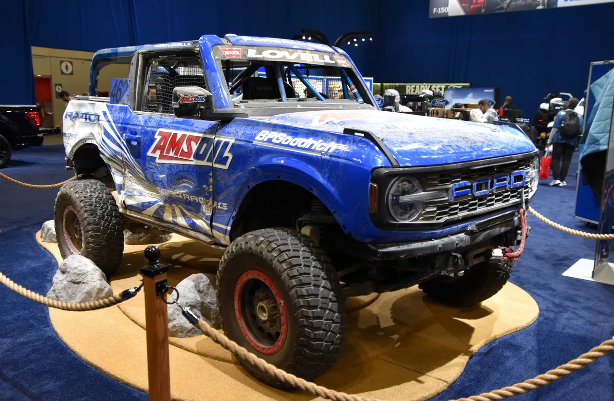

▲ 포드 브롱코 랩터. 브롱코·랩터·트레머로 이어지는 오프로드 라인업이 포드 판매를 견인하고 있다 ⓒ UltraTech66, Wikimedia Commons (CC BY-SA 4.0)
미국 자동차 매체 카버즈(CarBuzz)에 따르면 2026년 2분기 포드 브롱코가 4만 5,739대 판매되며 지프 랭글러(4만 1,793대)를 처음으로 앞질렀다. 브롱코·랩터·트레머 등 오프로드 특화 모델이 포드 전체 판매의 25%를 차지할 정도로 비중이 커졌고, 이는 오랫동안 오프로드 SUV 시장을 지배해온 지프의 입지를 흔드는 신호로 해석된다.
| 항목 | 포드 브롱코 | 지프 랭글러 |
|---|---|---|
| 2026년 2분기 판매량 | 4만 5,739대 | 4만 1,793대 |
| 순위 역전 | 사상 최초 | |
| 포드 오프로드 모델 비중 | 전체 판매의 약 25%(브롱코·랩터·트레머 등) | |
1. "더 젊고 부유한 고객" — 짐 팔리가 말한 오프로드 전략

▲ 지프 랭글러. 오랫동안 오프로드 SUV 시장을 지배해왔지만 2026년 2분기 브롱코에 판매량을 추월당했다 ⓒ Elise240SX, Wikimedia Commons (CC BY-SA 4.0)
포드 CEO 짐 팔리는 브롱코·랩터 등 오프로드 특화 모델들이 기존 포드 고객층보다 더 젊고 부유하며 지역적으로도 다양한 신규 고객을 끌어들이고 있다고 밝혔다. 여기에 미국의 배출가스 규제 완화로 V8 엔진을 탑재한 고성능 트림 판매가 늘어난 점도 수익성 개선에 기여했다는 것이 매체의 분석이다. 오프로드 모델은 대체로 높은 마진을 남기는 상위 트림 비중이 커, 판매량 증가가 곧바로 수익성 개선으로 이어지는 구조다.
2. 국내에도 이미 상륙 — 2.3L 7,400만 원, 2.7L 8,160만 원
포드 브롱코는 6세대부터 국내에도 정식 수입되고 있다. 출시 초기에는 하드톱 공급업체(베바스토)의 품질 문제로 생산이 지연되며 국내 출시 일정이 한때 불투명했지만, 현재는 2.3L 에코부스트 트림이 7,400만 원, 2.7L 트림이 8,160만 원부터 정식 판매되고 있다. 배기량과 트림에 따라 가격 차이가 크므로, 오프로드 성능보다 진입 가격을 우선한다면 2.3L 트림이 상대적으로 접근하기 쉬운 선택지다.
다만 이번 기사에서 다룬 미국 시장의 랭글러 추월 흐름이 국내 판매량에도 그대로 반영되는 것은 아니다. 국내에서는 랭글러가 오랜 기간 축적한 브랜드 인지도와 정비 인프라를 갖추고 있어 여전히 우위에 있다는 평가가 많다. 특히 랭글러의 도심형 트림인 사하라·오버랜드도 꾸준한 판매를 유지하고 있어, 국내 오프로드 SUV 시장의 구도 변화는 미국보다 더디게 진행될 가능성이 높다.
3. 정리 — 오프로드 SUV 지형도가 바뀌고 있다

▲ 포드 브롱코 랩터. 오프로드 특화 라인업 확장이 판매 역전의 배경으로 꼽힌다 ⓒ Charles, Wikimedia Commons (CC0)
미국 시장에서 벌어진 이번 역전은 단순한 분기별 판매량 등락을 넘어, 오프로드 특화 SUV 시장의 무게추가 지프에서 포드로 옮겨가고 있다는 신호로 해석된다. 국내에서는 아직 랭글러의 입지가 굳건하지만, 포드가 브롱코 라인업을 확장하고 국내 가격 경쟁력을 높인다면 장기적으로 국내 오프로드 SUV 시장 구도에도 변화가 생길 가능성이 있다.
국내에서 두 차종을 비교할 때는 미국 판매량보다 실제 시승 경험과 사후 관리 비용을 우선 따져보는 것이 현실적이다. 오프로드 주행이 잦다면 브롱코의 세이버 트레일 옵션, 도심 주행이 많다면 랭글러의 검증된 편의사양을 비교해보는 식의 접근이 유효하다.